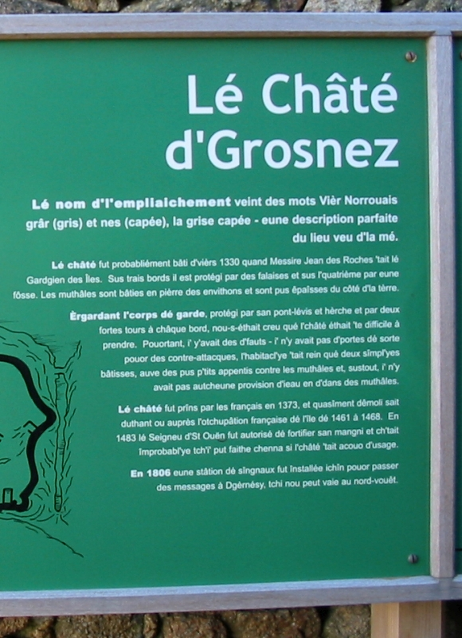

L'Assembliée d'Jèrriais
L'Vièr Châté d'Grosnez

Viyant qué l'temps 'tait trop rude pour aver la réunion mensuelle en pliein air à Grosnez, au mains 80 membres lus rêunîtent dans la Salle Parouaîssiale dé St Ouen, vendrédi, l'23 d'juilet.
D'vant c'menchi l's affaithes, lé Président d'mandit ès membres dé lus l'ver eune minute en silence en mémouaithe dé deux membres décédés.
L's affaithes
Lé rapport dé la visite à la Cour Rouoyale au mais d'mai et l'sien du Service Annuel fûdrent lius et acceptés, la correspondance fut liue et deux nouvieaux membres fûdrent êlus.
Discours

Lé Député Quérée fit la beinv'nue à Moussieu Ph. Ahier, B.Sc., qu'est bein erconnu pour sa connaissance dé l'histouaithe dé I'Île, et qui 'tait' v'nu pour nos donner des discours, preunmiéth'ment sus l'vièr châté d'Grosnez, qui fut bâti au c'mench'ment du 13ième siéclye, drôle assez auve lé pits en d'hors des fortifications. Lé châté fut bâti comme erfuge contre l's attaques sus L'Île, dé tchi qu'i' y en eut neuf entre 1204 et 1373. Vraiement bein p'tit est r'cordé comme histouaithe du vièr châté qui n'duthit qué tchiques siéclyes, car en 1520 i' 'tait en ruinnes, mais bieau qu'i' n'tait pus en t'nange il appartenait acouo au Gouvèrnément.
Lé Pinnaclye
Eune pliaiche otchupée par des hommes des anciens temps, qui laîssîtent lus traces par l'arrang'ment des pierres, pour lus d'meuthes, etc., d'autres étout qu'i l'y faithaient du feu, et mangaient des cordrettes, et faithaient des ronds pôts, faichonés auve lus mains, et mertchis auve lus onglyes ou tchique pouintu instrument. I'y a des traces étout qu'i' taient bein réligieurs, car i'y a eune pliaiche pour l'adoration du Bouan Dgieu.
L'Education à St Ouën
Ayant fini ches deux discours bein intérèssants, mais bein difficile à racourrchi sans qu'en haler l'împortance. Moussieu Ahier paslit d'l'êducation des grand' personnes à St Ouën dé vièrs 1867. À l'êcole dé L'Eglyise au vendrédi au sé, il' avaient des classes dé deux sou', quand i'y avait des discours en Angliais, Français et Jèrriais. Un maître Français, Moussieu H. de Monteyremar, mînt les classes en allant, et i' continuîtent avec grand succès jusqu'à qu'un nouvieau Recteu vînse dans la paraisse, qui dêcouvri qu'eune clause dans l'contrat portait qué l'école avait 'té bâtie pour l'écolage des êfants seul'ment. Ch'tait bein intérèsant d'ouï des vièrs noms St. Ouennais qu'y prennaient part, comme Le Cornu, Vibert, Le Feuvre, etc.
Ermerciements
À la fin des discours, le Président ermercyit Moussieu Ahier pour tout ch'qu'il avait dit dé si intérêssant, et d'mandit ès membres dé filer á L'Etacq pour eune tassée d'café et tchiques raffraichiss'ments. Duthant la séthée, le Président annoncit la préchaine rêunion au Mangnyi dé La Hougue Boête, vendrédi, l'27 d'août, á 7.30, et auprès dans la Salle Parouaîssiale dé St. Jean pour un discours par Mme. Joan Stevens, entouor lé Mangnyi.
1965
Viyiz étout: